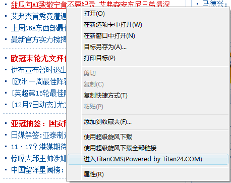

在鼠标右键增加一个菜单项, 使得可以方便快捷地进入cms后台,实时编辑文章,专题,栏目页.
先下载插件文件：TitanCMS_Plugins.zip，然后解压缩，按下面提示安装。
1. 请双击“IE添加右键菜单.reg”，然后选择“是”.
2. 安装成功以后请关掉所有浏览器重新打开IE.
3. 假如要删除该右键菜单项,双击“IE删除右键菜单.reg”，然后选择“是”.
1. 打开Firefox浏览器,单击浏览器右上角"向下还原"按钮(在关闭按钮的左边,最小化按钮的右边),Firefox将缩小成一个窗口.
2. 找到当前文件夹下面的TitanCms IN Firefox.xpi,将这个文件拖入到Firefox窗口中,点击"立即安装",再点击"重新启动Firefox".
Firefox下面另外一个安装该插件的方法:单击文件菜单--打开文件--选择TitanCms IN Firefox.xpi.

1. 在链接上点右键，进入该链接的后台页面。
2. 在空白处点右键，进入该页面的后台页面。